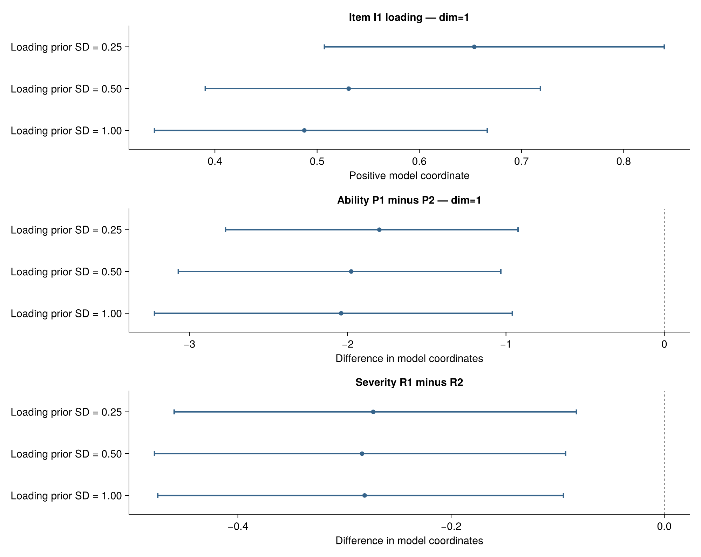
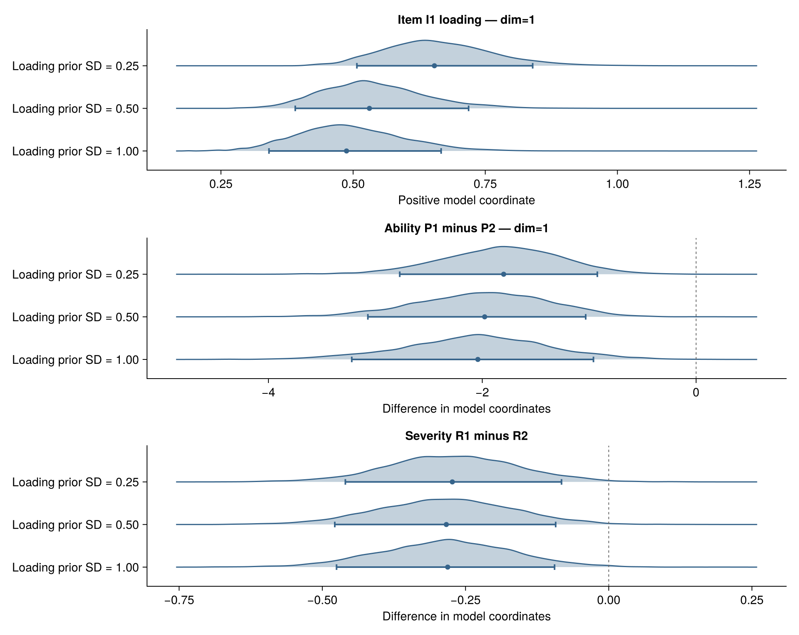
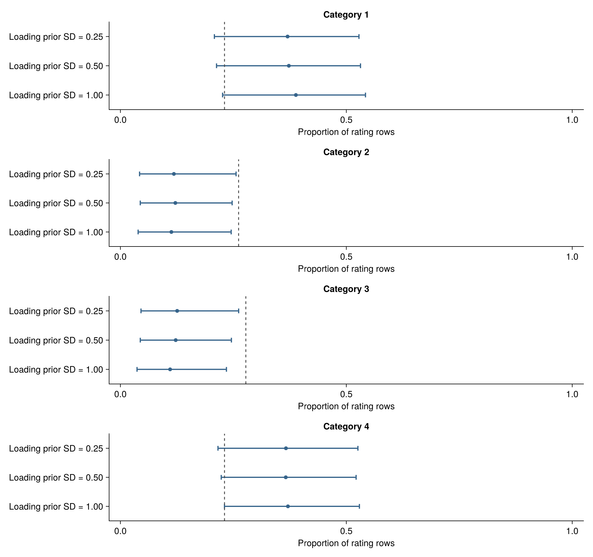
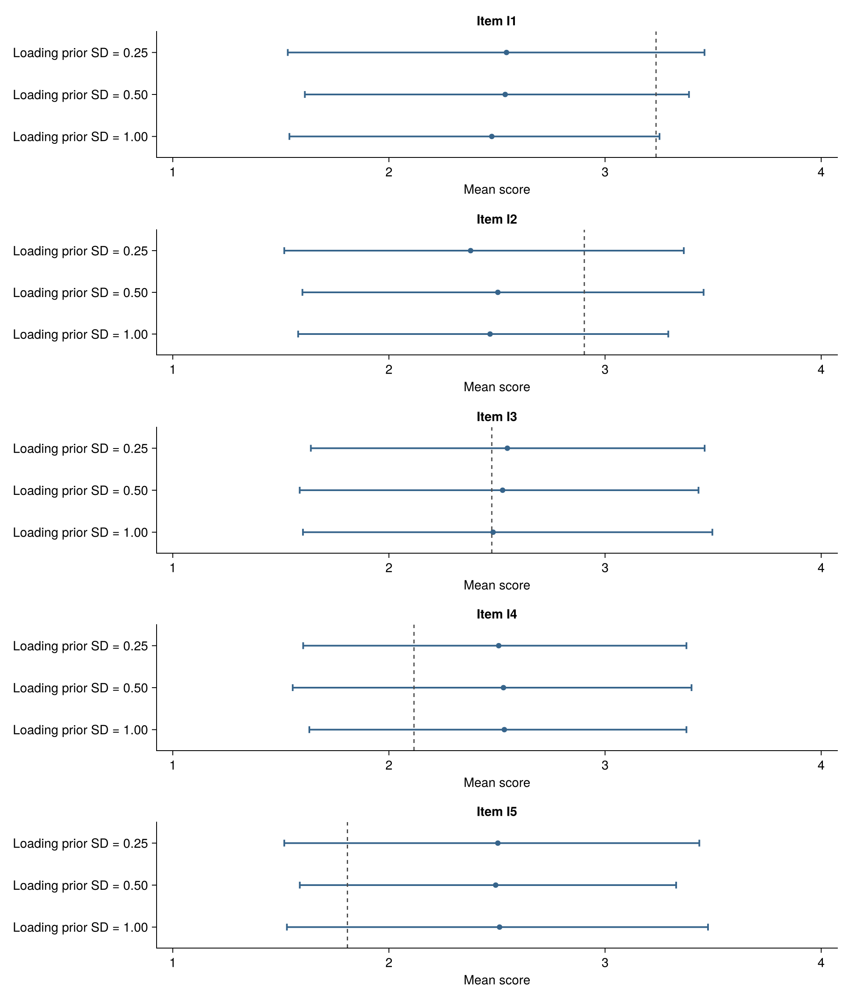
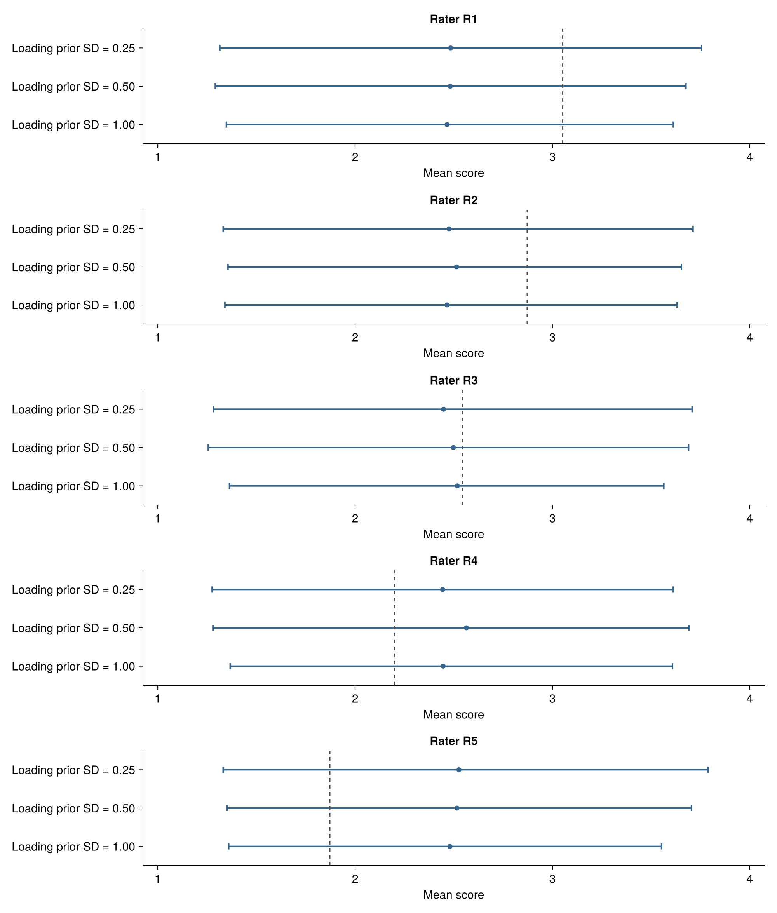

Would a different prior change my answer?
This development candidate compares already fitted prior variants for the same data and model. Start with a scientific question: for example, whether one rater is more severe than another, or how uncertain a particular loading is. Declare plausible alternative priors and the quantities of interest before examining their answers. A prior is not preferable simply because it produces a preferred conclusion, a smaller interval, or a better recovery score.
The initial supported scope is the normalized-prior MGMFRM with the same Q matrix, dimensions, category scale, identification, data and all prior settings except the SD of log item loadings (log_discrimination_sd). These functions require the BayesianMGMFRM. prefix and are not part of a released stable API. They do not launch fits. MFRM/GMFRM, different identifying scales, free latent correlations and the joint-rating prototype are not yet supported by this particular comparison entry point.
From saved fits to a scientific contrast
Use the ordinary saved-fit loader for fit caches. Earlier sample records have a separate validated constructor; the repository example examples/prior_sensitivity.jl demonstrates that path for trusted records.
using BayesianMGMFRM
const B = BayesianMGMFRM
narrow = load_fit_cache("narrow-fit.jls")
wide = load_fit_cache("wide-fit.jls")
B.recovery_quantities(narrow) # Inspect exact names, dimensions and units.
result = B.prior_sensitivity(
["Narrow" => narrow, "Wide" => wide];
planned_prior_ids = ["Narrow", "Wide", "Third planned prior"],
failures = ["Third planned prior" => "Sampling failed; no usable fit"],
dataset_id = "ratings-v1",
observation_ids = rating_ids, # Unique IDs in the original fitted row order.
estimands = [
"Rater 1 minus rater 2" => ("rater[R1]", "rater[R2]"),
],
cutoffs = Dict("Rater 1 minus rater 2" => 0.0),
interval = 0.99,
)Replace the names with those actually returned by your fit's quantity inventory. Positive severity differences mean the first named rater is more severe in this parameterization. The difference is calculated within each joint posterior draw, preserving dependence between raters. Subtracting separately shuffled draws, or subtracting two marginal interval endpoints, would answer a different question. Contrasts across dimensions or coordinate blocks are rejected.
Keep the full planned prior roster. Failed and missing variants remain visible; they are not silently removed from the denominator. Numerical warnings remain attached to completed fits. Changing the number of retained draws between variants is allowed and does not create artificial pairing.
Three kinds of uncertainty
- Posterior uncertainty: the median and equal-tailed credible interval within each fit. Set
interval=0.90or0.99explicitly. These are not HDIs. - Monte Carlo uncertainty: each mean, SD and reported quantile has its native chain-aware MCSE and availability status. A wider credible interval may still have precisely estimated endpoints; a narrow interval can have imprecise ones.
- Sensitivity to prior choice: changes in corresponding summaries across fits. There is no implicit posterior distribution for “the difference between two priors.” Cross-fit covariance is unknown; the report gives the sum of the two MCSEs as a conservative estimated standard-error upper bound for a summary change, not a confidence interval or an independent-fit standard error.
For a declared cutoff, the report says whether the interval is above, below, or includes it. An endpoint within mcse_multiplier MCSEs of the cutoff is marked unresolved by that numerical screen. The default multiplier is 2; it is not a simultaneous confidence guarantee. This interval rule does not calculate a posterior sign probability, a ROPE probability, or a Bayes factor.
No numerical precision threshold is silently selected. Supply max_mcse in estimand units to screen the mean and all three displayed quantiles; otherwise precision_qualified is nothing. A single tolerance is appropriate only if its meaning is defensible for every selected estimand. Sampling diagnostics, precision and scientific adequacy remain separate. MCSE uses the existing MCMCDiagnosticTools estimator.
Interval and ridge views
using CairoMakie
fig = B.plot_prior_sensitivity(result; kind=:interval)
ridge = B.plot_prior_sensitivity(result; kind=:ridge)
B.save_prior_sensitivity_bundle("prior-comparison", result)
restored = B.load_prior_sensitivity_bundle("prior-comparison")Each estimand has its own panel; all prior rows in a panel share the same horizontal scale. Missing/failed rows and orange warning rows remain visible. Structural constants are diamonds, not estimated distributions. Titles and complete notes are written outside the image by default. The bundle includes PDF, SVG, PNG, numerical JSON, external notes and a reloadable record, together with file hashes. The reader verifies those files without requiring CairoMakie. Existing destinations are refused. Load only trusted Julia serialization files.
The ridge view uses a Gaussian kernel with a shared bandwidth within each estimand. For positive loadings, it estimates density in log coordinates and transforms back with the Jacobian, so the plotted distribution has positive support. Default bandwidth is 0.9 * min(SD, IQR/1.34) * n^(-1/5) of pooled transformed display draws. bandwidth allows an explicit alternative in those coordinates; the numerical export records the actual choice and grid. Draw count is used for display smoothing, not as a claim of independent samples or KDE precision. The log-KDE methodology explains why transformation and the Jacobian matter for positive support.
Density heights share a scale within each panel and are not comparable across panels. Inspect bandwidth sensitivity when interpreting shape. Overlapping marginal ridges are not a paired contrast test, evidence of equivalence, or a picture of the multidimensional joint correlation.
Saved simulation illustration
The figures below reuse the first planned block, B01, of panel R1 from the completed fixed-facet assessment. They compare loading-prior SDs of 0.25, 0.50 and 1.00 using 4,000 retained draws per fit. The three focal quantities are the I1 loading, the P1−P2 ability difference on the first dimension, and the R1−R2 severity difference. Zero cutoffs are illustrative interval decision rules, not retrospectively registered scientific thresholds.

The dots are posterior medians and the bars are 90% equal-tailed credible intervals. The axes compare the same quantities across priors. Full external notes and the underlying values are included below.

In this block, the I1 loading median changes from 0.654 to 0.531 to 0.488 as the prior SD widens. Its 90% intervals are [0.507, 0.840], [0.391, 0.718] and [0.341, 0.667]. Both named contrasts retain intervals entirely below zero under all three priors, and their endpoint MCSE screens remain stable. Thus the loading estimate is sensitive while these particular interval-based directional decisions are unchanged; this is a statement about this saved block, not a general robustness or calibration claim.
These are actual saved simulation posteriors, not newly estimated results or empirical data. This illustration contributes zero new fits and zero new independent replications. The original assessment completed 192 fits, of which 184 passed its own diagnostic/precision qualification. Displaying this one block neither replaces that assessment nor establishes a default prior. In the full R1 assessment, the narrow prior's 90% interval covered the I1 loading truth in only 1 of 32 blocks despite all 32 fitting qualifications; numerical success alone did not establish calibration.
Download the interval PDF, interval SVG, interval note, ridge PDF, ridge SVG, ridge note, numerical summaries and selected draws, and density coordinates and bandwidths.


What this comparison cannot decide
Prior predictive comparison is a complementary step, detailed below. It does not validate substantive plausibility automatically. Inspect the rating design, within-person dependence and patterns beyond the displayed summaries too. Predictive model comparison answers a different question. Bayes factors need separate validated marginal-likelihood computation; these summary changes and kernel densities do not supply it. See Reading Results and Comparing Models for model choice and interval interpretation.
What do these priors predict before seeing scores?
A prior over parameters also implies a distribution over possible ratings. Draw parameters from the prior, then generate a complete replicated rating dataset from the response model. Repeating this procedure gives p(y_rep) = ∫ p(y_rep | theta) p(theta) dtheta. The recorded persons, items, raters, category scale and assignment rows stay fixed. Observed scores provide reference marks; they do not update the generated parameter distribution. This is the prior predictive check described in the Stan User's Guide.
Use B.prior_predictive_sensitivity before fitting to examine scientifically plausible alternatives. Pass explicitly constructed B.Experimental.NormalizedMGMFRMPrior objects as id => prior pairs. Its first supported scope matches the saved posterior comparison: only the log-loading SD varies. The existing normalized-prior generator supplies the draws, including the covariance induced by zero-sum blocks. A centered block's supplied scale is a kernel SD, not each constrained coordinate's marginal SD.
For a saved comparison, the following connects the exact priors to the original specification without fitting again. The widths in this example are illustration settings, not recommended defaults.
posterior = B.load_prior_sensitivity("posterior-comparison.jls")
priors = [
e.prior_id => B.Experimental.NormalizedMGMFRMPrior(;
prior_model=e.evaluation.prior.prior_model,
source_rater=e.evaluation.prior.source_rater,
e.evaluation.prior.scales...,
) for e in posterior.ledger if e.evaluation !== nothing
]
checks = B.prior_predictive_sensitivity(spec, priors;
planned_prior_ids=posterior.planned_prior_ids,
dataset_id=posterior.dataset_id,
observation_ids=posterior.observation_ids,
seeds=Dict(id => 41250+i for (i, (id, _)) in enumerate(priors)),
ndraws=500,
interval=0.90,
posterior=posterior,
)
B.save_prior_predictive_sensitivity("prior-predictions.jls", checks)
restored = B.load_prior_predictive_sensitivity("prior-predictions.jls")
using CairoMakie
fig = B.plot_prior_predictive_sensitivity(restored)
items = B.plot_prior_predictive_sensitivity(restored; statistic=:item_mean)
raters = B.plot_prior_predictive_sensitivity(restored; statistic=:rater_mean)
# Select exact level IDs when a design has many items or raters:
selected = B.plot_prior_predictive_sensitivity(restored;
statistic=:item_mean, levels=["I1", "I2"])Here spec must be the same original specification and data. The comparison checks data, row IDs and order, dimension labels, prior records and target identities before generating anything. Merely naming two variants “Narrow” does not make their priors identical. posterior is optional; omitting it lets you check priors before fitting. Missing/failed prior checks stay in their own ledger, and a linked posterior's missing/failed/warning status stays separate. A successful prior simulation does not repair a failed posterior fit.
examples/prior_predictive_sensitivity.jl saves this workflow's numerical table and complete record. The complete record retains generated statistics for every rating summary, including person and observed assignment-cell summaries, seeds, actual priors, generator/RNG names, Julia version and the optional posterior hash. The generator can be replayed in the recorded software environment. It is not a promise of identical random streams across Julia versions. Loading the saved statistics reproduces the comparison without regenerating draws.
Predictive spread and numerical error answer different questions
The displayed 90% intervals describe variation in replicated score statistics under the prior and response model. They are neither posterior parameter CrIs nor uncertainty intervals around the Monte Carlo mean. Set interval=0.99 for 99% equal-tailed predictive intervals. Extreme endpoints require more draws for stable estimation; this version does not estimate their MCSE or automatically qualify them.
Each replication is a fresh independent parameter draw followed by conditional responses. Mean MCSE is the sample SD of a statistic across replications divided by sqrt(ndraws). The same formula applied to the inclusive indicators statistic <= observed and statistic >= observed gives tail-proportion MCSE. These calculations do not use MCMC ESS. A zero empirical MCSE may mean that a rare event was never sampled, so degenerate estimates are flagged explicitly. Inclusive tails overlap at ties and need not sum to one. Tail probabilities, interval-outside flags and existing implication diagnostics are descriptive, not calibrated hypothesis tests or a method for ranking priors. Statistics from one replicated dataset remain dependent; there is no simultaneous acceptance rule across categories, persons, items and raters.
Illustration: a reasonable average can conceal a category mismatch
The next figures use the same preselected B01/R1 design as the posterior example: 50 persons, five items, five raters and 1,250 rating rows. Each prior receives exactly 500 newly generated IID prior/response draws, with seeds 41251–41253. There are zero new MCMC fits and zero new independent recovery replications. All three actual prior/target identities agree with the saved posterior comparison. The observed data are simulated, not empirical ratings.
| Loading-prior SD | Replicated mean score (MCSE) | Category 2 expected proportion (MCSE) | Category 3 expected proportion (MCSE) |
|---|---|---|---|
| 0.25 | 2.499 (0.012) | 0.128 (0.003) | 0.136 (0.003) |
| 0.50 | 2.501 (0.011) | 0.130 (0.003) | 0.129 (0.003) |
| 1.00 | 2.481 (0.011) | 0.123 (0.003) | 0.121 (0.003) |
| Observed | 2.508 | 0.262 | 0.278 |
The overall expected score is close to the observed mean, while all three priors expect markedly fewer middle-category ratings and more extreme ratings. This is a concrete reason to inspect category use as well as averages. The pattern is shared across these alternatives; it does not isolate the loading prior as its cause. It calls for examining the joint prior and response model against substantive expectations, not automatically choosing the closest prior. The 500-draw illustration does not establish endpoint precision, a formal prior–data conflict conclusion or recovery/calibration performance.
Prior predictive category use

Note. Dots are predictive medians; bars are 90% equal-tailed predictive intervals. Dashed lines mark observed proportions. Every panel uses the same 0–1 proportion scale. The distribution is over replicated datasets on the fixed rating design, not over posterior parameter estimates. Full external note, PDF, SVG.

Prior predictive item means

Note. All five items are displayed in their recorded order. Dots, intervals and dashed lines have the same meaning as above, now on the 1–4 mean-score scale. Each item averages its actual assigned ratings; uneven assignments in other designs may mix person and rater composition with item effects. Full external note, PDF, SVG.

Prior predictive rater means

Note. All five raters are displayed. These are mean-score predictions, not rater-severity posteriors; each rater's observed assignment rows are retained. Good agreement of rater means alone would not validate response dependence, connectivity, dimensionality or item–rater interactions. Full external note, PDF, SVG.

Download the numerical summaries, priors, seeds and linked-result hash.
Candidate API reference
BayesianMGMFRM.prior_sensitivity — Function
BayesianMGMFRM.prior_sensitivity(fits; planned_prior_ids, estimands,
dataset_id, observation_ids, baseline=first(planned_prior_ids),
interval=0.90, failures=Pair[], cutoffs=Dict(), max_mcse=nothing,
mcse_multiplier=2.0)Compare saved prior variants without fitting. fits contains id => fit pairs; declare every planned ID, including failures and missing fits. The first supported scope is Experimental.NormalizedMGMFRMFit with identical data/specification and prior, except log_discrimination_sd. Different dimensions, identifying priors, models and unsupported fit types are rejected. Use exact coordinate names from recovery_quantities(fit). An estimand maps a label to a name, or to (left,right) for a within-fit draw-paired difference in the same block/dimension/scale.
Intervals are equal-tailed (e.g. interval=0.99), never HDI. All retained chains and draws, native mean/SD/quantile MCSE, sampling warnings, actual prior records, and sample/target identities are preserved. max_mcse optionally screens the mean and all three reported quantiles in estimand units; no default precision acceptance is inferred. cutoffs maps labels to declared scientific thresholds. Interval-relative decisions carry an endpoint MCSE screen, not a simultaneous error bound or proof of practical equivalence. This does not compute P(X>cutoff).
Across-prior differences are differences of summaries, not paired draws or credible intervals for an across-model random variable. Their MCSE upper bounds sum the two marginal MCSEs, allowing unknown covariance; these are estimated standard-error bounds, not confidence bounds. Scientific acceptance, calibration, prior predictive adequacy and recommendations are not established by this report.
BayesianMGMFRM.prior_sensitivity_plot_data — Function
BayesianMGMFRM.prior_sensitivity_plot_data(result; bandwidth=nothing, points=256)Compute reproducible Gaussian kernel densities from all selected draws. Each estimand shares a grid and bandwidth across priors. The default bandwidth is 0.9 * min(SD, IQR/1.34) * n^(-1/5) of pooled display draws; bandwidth overrides it in real or log units. Positive coordinates use log-KDE with the inverse Jacobian, avoiding negative density support. Fixed or accidentally constant draws receive markers, not fabricated densities. Density height is descriptive; no KDE precision or posterior calibration is inferred from draw count.
BayesianMGMFRM.plot_prior_sensitivity — Function
BayesianMGMFRM.plot_prior_sensitivity(result; kind=:interval, annotation_io=stdout,
size=nothing, bandwidth=nothing, points=256)Draw same-scale prior rows in separate estimand panels; kind=:ridge adds KDEs. Requires CairoMakie. Warning/missing/failed rows remain visible. Figure titles and notes are external by default. Ridge heights share one density scale within each panel; density overlap is neither a contrast test nor evidence of equivalence.
BayesianMGMFRM.save_prior_sensitivity — Function
BayesianMGMFRM.save_prior_sensitivity(path, result)
BayesianMGMFRM.load_prior_sensitivity(path)Save/reload the complete sealed result, including selected draws and chain metadata. Existing paths are refused. Load trusted Julia serialization files only; integrity hashes detect accidental changes and do not authenticate an untrusted file.
BayesianMGMFRM.load_prior_sensitivity — Function
BayesianMGMFRM.save_prior_sensitivity(path, result)
BayesianMGMFRM.load_prior_sensitivity(path)Save/reload the complete sealed result, including selected draws and chain metadata. Existing paths are refused. Load trusted Julia serialization files only; integrity hashes detect accidental changes and do not authenticate an untrusted file.
BayesianMGMFRM.save_prior_sensitivity_bundle — Function
BayesianMGMFRM.save_prior_sensitivity_bundle(directory, result; bandwidth=nothing, points=256)
BayesianMGMFRM.load_prior_sensitivity_bundle(directory)Export PDF/SVG/PNG interval and ridge figures, external notes, numerical JSON, and the reloadable result. CairoMakie is required only for writing. The directory must not exist; all figures are staged before publication. The reader checks every file hash, then reloads the sealed result. Only load trusted bundles.
BayesianMGMFRM.load_prior_sensitivity_bundle — Function
BayesianMGMFRM.save_prior_sensitivity_bundle(directory, result; bandwidth=nothing, points=256)
BayesianMGMFRM.load_prior_sensitivity_bundle(directory)Export PDF/SVG/PNG interval and ridge figures, external notes, numerical JSON, and the reloadable result. CairoMakie is required only for writing. The directory must not exist; all figures are staged before publication. The reader checks every file hash, then reloads the sealed result. Only load trusted bundles.
BayesianMGMFRM.prior_predictive_sensitivity — Function
BayesianMGMFRM.prior_predictive_sensitivity(spec, priors;
planned_prior_ids, dataset_id, observation_ids, seeds, ndraws,
interval=0.90, failures=Pair[], posterior=nothing)Compare explicitly supplied normalized MGMFRM priors on the same observed rating design. priors contains id => Experimental.NormalizedMGMFRMPrior pairs; only log_discrimination_sd may differ. seeds maps each available ID to an explicit nonnegative integer seed. ndraws >= 2 is required, with no automatic extra draws. Each variant uses the existing prior-predictive generator with its own seeded MersenneTwister. Observed scores are reference values, not conditioning data. This generates IID prior parameter/response draws, never posterior fits or SBC.
The sealed result retains all planned IDs, missing/failed variants, full actual priors, target/data identity, seeds and per-draw statistics for overall/category, person/item/rater, optional-facet and grouped checks. Replicated intervals are equal-tailed predictive intervals, not parameter CrIs or HDIs. MCSE of means and inclusive tail proportions uses sample SD / sqrt(ndraws), not MCMC ESS. Zero empirical MCSE can reflect an unobserved event; endpoint MCSE is not computed. Tail probabilities and flag are descriptive, not calibrated tests, automatic prior rankings, or proof of adequacy. They are dependent across statistics.
Optionally bind a saved prior_sensitivity result through posterior. Its seal, planned IDs, row IDs/order, canonical design/data, dataset ID and every available variant's actual prior/target must agree before any simulation. Posterior failures remain distinct from prior-generation failures. The linked result hash and source sample hashes are retained; existing posterior draws are neither updated nor fit.
BayesianMGMFRM.plot_prior_predictive_sensitivity — Function
BayesianMGMFRM.plot_prior_predictive_sensitivity(result;
statistic=:category_proportion, levels=nothing, annotation_io=stdout, size=nothing)Compare a declared statistic across priors. levels=nothing displays all levels; an explicit collection selects exact level IDs. Dots/bars are prior predictive medians/intervals; dashed lines mark observed statistics. Requires CairoMakie. Every level has a panel on a common scale; failed/missing rows remain visible. Figure notes are external by default. This does not visualize parameter CrIs.
BayesianMGMFRM.save_prior_predictive_sensitivity — Function
BayesianMGMFRM.save_prior_predictive_sensitivity(path, result)
BayesianMGMFRM.load_prior_predictive_sensitivity(path)Save/reload the sealed comparison, including generated statistic draws, seeds, actual priors and optional posterior link. Existing paths are refused. Load only trusted Julia serialization files; integrity hashes do not authenticate a source.
BayesianMGMFRM.load_prior_predictive_sensitivity — Function
BayesianMGMFRM.save_prior_predictive_sensitivity(path, result)
BayesianMGMFRM.load_prior_predictive_sensitivity(path)Save/reload the sealed comparison, including generated statistic draws, seeds, actual priors and optional posterior link. Existing paths are refused. Load only trusted Julia serialization files; integrity hashes do not authenticate a source.